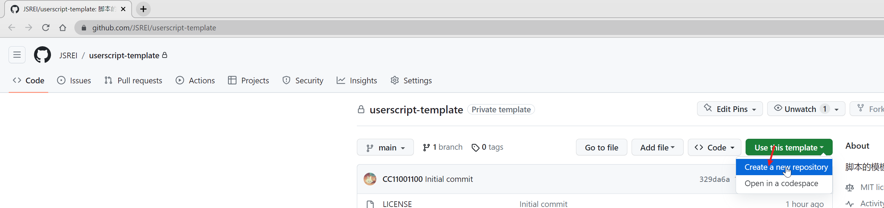

现代化油猴脚本开发模板 - 支持模块化开发、热加载、npm包管理
通过 npm 命令一键创建项目，无需手动配置，开箱即用
使用 Webpack 模块化管理代码，告别单文件开发的痛苦
开发时修改代码自动编译，实时预览效果
支持自定义 ASCII 艺术字，让你的脚本更有个性
打包后为高可读性的单文件，完全符合油猴商店上架政策
一键构建发布版本，无需额外处理即可上架
推荐方式 - 使用 npm 命令一键创建项目：
# 使用 npm create（推荐）
npm create @javascript-reverse-engineering-infrastructure/userscript my-userscript
# 或者使用 npx
npx @javascript-reverse-engineering-infrastructure/create-userscript my-userscript
# 进入项目目录
cd my-userscript
# 安装依赖
npm install在 GitHub 模板仓库选择 "Use this template" 创建新仓库
前往模板仓库 Loading... 项目创建完成后，你就可以开始开发了！项目结构如下：
my-userscript/
├── src/ # 源代码目录
│ ├── index.js # 入口文件
│ ├── foo_module/ # 示例模块
│ └── bar_module/ # 示例模块
├── dist/ # 编译输出目录
├── banner.txt # Banner 文件
├── userscript-headers.js # 油猴脚本头部配置
├── webpack.*.js # Webpack 配置
└── package.json # 项目配置在项目目录下运行以下命令启动开发服务，支持热重载：
npm run watchyarn watch./fuck-hot-compile.sh说明： 这是一个简单的 shell 脚本，用于在遇到 hot watch 不工作时的替代方案
此命令会监听源文件变化并自动重新编译。
npm run build在 GitHub 模板仓库选择 "Use this template" 创建新仓库
前往模板仓库 Loading...git clone [你的仓库地址]
cd [项目目录]
yarn install在项目目录下运行以下命令启动开发服务：
npm run watchyarn watch./fuck-hot-compile.sh说明： 这是一个简单的 shell 脚本，用于在遇到 hot watch 不工作时的替代方案
此命令会监听源文件变化并自动重新编译。
yarn build项目支持在编译后的代码中添加自定义 banner。在项目根目录的 banner.txt 文件中，你可以添加 ASCII 艺术字或其他装饰性文本。
在项目根目录创建或编辑 banner.txt 文件：
▗▄▄▄▖▗▖ ▗▖▗▄▄▖ ▗▄▄▄▖ ▗▄▄▖ ▗▄▄▖▗▄▄▖ ▗▄▄▄▖▗▄▄▖▗▄▄▄▖
█ ▝▚▞▘ ▐▌ ▐▌▐▌ ▐▌ ▐▌ ▐▌ ▐▌ █ ▐▌ ▐▌ █
█ ▐▌ ▐▛▀▘ ▐▛▀▀▘ ▝▀▚▖▐▌ ▐▛▀▚▖ █ ▐▛▀▘ █
█ ▐▌ ▐▌ ▐▙▄▄▖▗▄▄▞▘▝▚▄▄▖▐▌ ▐▌▗▄█▄▖▐▌ █
▗▖ ▗▖ ▗▄▄▖▗▄▄▄▖▗▄▄▖ ▗▄▄▖ ▗▄▄▖▗▄▄▖ ▗▄▄▄▖▗▄▄▖▗▄▄▄▖
▐▌ ▐▌▐▌ ▐▌ ▐▌ ▐▌▐▌ ▐▌ ▐▌ ▐▌ █ ▐▌ ▐▌ █
▐▌ ▐▌ ▝▀▚▖▐▛▀▀▘▐▛▀▚▖ ▝▀▚▖▐▌ ▐▛▀▚▖ █ ▐▛▀▘ █
▝▚▄▞▘▗▄▄▞▘▐▙▄▄▖▐▌ ▐▌▗▄▄▞▘▝▚▄▄▖▐▌ ▐▌▗▄█▄▖▐▌ █
▗▄▄▄▖▗▄▄▄▖▗▖ ▗▖▗▄▄▖ ▗▖ ▗▄▖▗▄▄▄▖▗▄▄▄▖
█ ▐▌ ▐▛▚▞▜▌▐▌ ▐▌▐▌ ▐▌ ▐▌ █ ▐▌
█ ▐▛▀▀▘▐▌ ▐▌▐▛▀▘ ▐▌ ▐▛▀▜▌ █ ▐▛▀▀▘
█ ▐▙▄▄▖▐▌ ▐▌▐▌ ▐▙▄▄▖▐▌ ▐▌ █ ▐▙▄▄▖Banner 内容支持以下变量替换：
${name} - 项目名称${version} - 版本号${description} - 项目描述${author} - 作者信息${repository} - 仓库地址${namespace} - 命名空间${document} - 文档地址编译时，banner 内容会被自动插入到油猴脚本头部注释中：
// ==UserScript==
// @name my-project
// @version 1.0.0
// ...
// ==/UserScript==
// ▗▄▄▄▖▗▖ ▗▖▗▄▄▖ ▗▄▄▄▖ ▗▄▄▖ ▗▄▄▖▗▄▄▖ ▗▄▄▄▖▗▄▄▖▗▄▄▄▖
// █ ▝▚▞▘ ▐▌ ▐▌▐▌ ▐▌ ▐▌ ▐▌ ▐▌ █ ▐▌ ▐▌ █
// █ ▐▌ ▐▛▀▘ ▐▛▀▀▘ ▝▀▚▖▐▌ ▐▛▀▚▖ █ ▐▛▀▘ █
// █ ▐▌ ▐▌ ▐▙▄▄▖▗▄▄▞▘▝▚▄▄▖▐▌ ▐▌▗▄█▄▖▐▌ █
// 你的代码...在开发过程中，您需要在油猴中创建一个指向本地文件的脚本。具体步骤如下：
在油猴扩展中创建新脚本，复制以下基础配置：
// ==UserScript==
// @name [你的脚本名称]
// @namespace [你的仓库地址]
// @version 0.0.1
// @description [脚本描述]
// @author [作者名称]
// @match *://*/*
// @run-at document-start
// @require file://[本地项目路径]/dist/index.js
// ==/UserScript==
(() => {})();请按照以下步骤开启文件网址访问权限：
完成以上设置后，即可使用本地文件进行开发调试。
在项目目录下运行以下命令启动开发服务：
npm run watchyarn watch./fuck-hot-compile.sh说明： 这是一个简单的 shell 脚本，用于在遇到 hot watch 不工作时的替代方案
此命令会监听源文件变化并自动重新编译。
现在您可以：
src 目录下的源代码源码修改会自动编译到 dist/index.js，油猴脚本会自动加载最新编译结果。
npm run build 或 yarn build 生成发布文件，然后将 dist/index.js 中的内容复制到油猴脚本中即可发布。